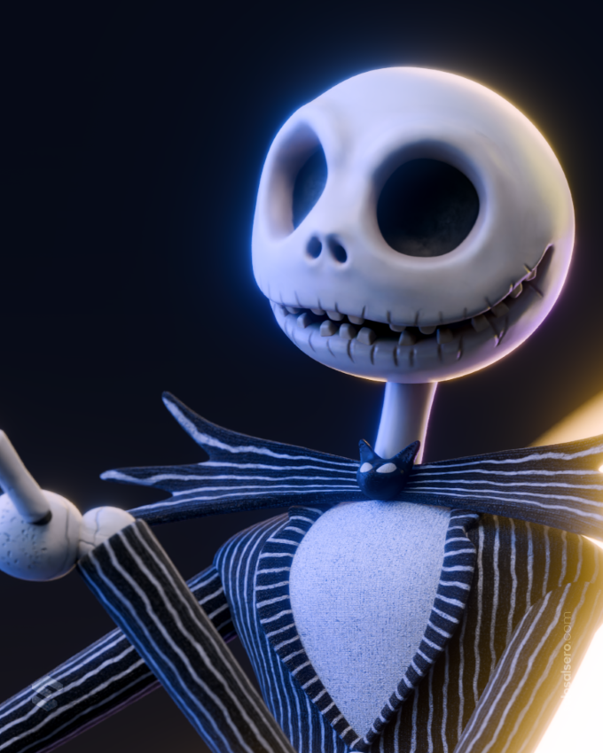

Jack Skellington

Jack Skellington es el protagonista de la historia y el famoso Rey Calabaza de Ciudad Halloween. A pesar de ser admirado por todos y ser muy bueno organizando Halloween, comienza a sentirse insatisfecho con su vida después de descubrir Ciudad Navidad. Fascinado por todo lo que encuentra allí, decide llevar la Navidad a su propio mundo, sin comprender completamente lo que implica. Su curiosidad y deseo de experimentar algo nuevo terminan provocando una serie de situaciones inesperadas.